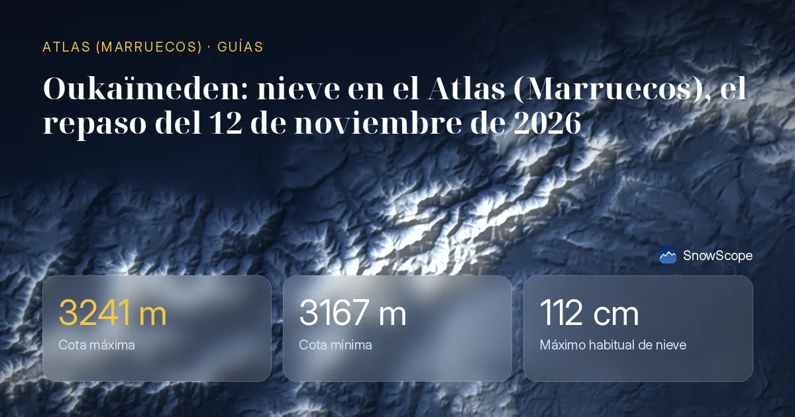

Oukaïmeden: nieve en el Atlas (Marruecos), el repaso del 12 de noviembre de 2026
Noviembre llega seco en el Alto Atlas. SnowScope muestra 0 cm en las tres altitudes de Oukaïmeden (base 2600 m, media montaña 2929 m, cima 3258 m) el 12 de noviembre, sin nieve fresca en la última semana y ninguna prevista para los próximos siete días. Va con retraso—normalmente la primera nieve se asienta aquí alrededor del 5 de noviembre—pero un comienzo de otoño lento no predice el invierno que viene.
Consulta la previsión de nieve en tiempo real de Oukaïmeden en la app SnowScopeEspesor de nieve, alertas de nieve polvo y mapa 3D, gratis.

Tres altitudes, todas desnudas
El mapa de nieve muestra gris en todo el valle de Ourika y hasta las altas crestas: 0 cm medidos en la base, media montaña y cima. Las últimas 48 horas no trajeron nada, ni la última semana. El pronóstico para los próximos siete días tampoco muestra nieve.
Cero en cada altitud no deja lugar a dudas. Las laderas del Toubkal y sus vecinas presentan roca expuesta y pedregal por ahora.
Noviembre suele ser escaso de todas formas
En los 46 inviernos pasados (1980–81 a 2025–26), la primera nieve llega típicamente a Oukaïmeden alrededor del 5 de noviembre. Incluso en un noviembre típico, la profundidad es escasa: el valor mediano es 2 cm en la base, 3 cm en media montaña y 3 cm en la cima. Un noviembre nevado puede dejar 30 a 38 cm en la base o 38 cm en la cima, pero es raro.
Diciembre marca el cambio real: 16 cm se acumulan en la base, 18 cm en media montaña y 20 cm en la cima en un invierno típico.
Cuándo alcanza su pico la temporada de nieve
Marzo es el mes más profundo en cada altitud. En un invierno medio, la base sostiene 46 cm, media montaña se sitúa en 53 cm y la cima alcanza 58 cm. El pico mediano en los 46 inviernos alcanza 78 cm en la base, 92 cm en media montaña y 112 cm en la cima. El invierno más escaso se detuvo en 49 cm en la cima; el más generoso llegó a 248 cm.
El último invierno (2025–26) fue generoso: 149 días de nieve y cobertura profunda en todo momento. La semana más fiable para alcanzar 50 cm o más en la cima es la semana 9 (finales de febrero/principios de marzo), cuando el 61 por ciento de los inviernos pasados lo consiguió.
Qué altitud ofrece las mejores probabilidades
La cima a 3258 m tiene el caso estadístico más sólido para nieve confiable. En los inviernos pasados, la cima recibe buena nieve (50 cm o más) en media temporada o mejor durante seis semanas; media montaña tiene cobertura confiable en cuatro semanas; la base es confiable solo una semana. La altitud importa aquí.
La diferencia se acumula a lo largo de un invierno. La cima promedía 112 cm de profundidad máxima; media montaña 92 cm; la base 78 cm. Esta brecha se amplía en años escasos y se reduce en años generosos, pero la cumbre siempre mantiene la mejor nieve.

Planeando un viaje a Oukaïmeden
Un noviembre seco es sin importancia en el Atlas. La nieve llega aquí en pulsos—grandes tormentas en lugar de acumulación gradual—así que la forma de una semana dice poco sobre el mes que viene. Si tienes como objetivo esquiar en Oukaïmeden, apunta a finales de enero hasta marzo y revisa el mapa de nieve una semana antes de viajar.
La carretera desde Marrakech puede cerrarse durante nieve abundante: confirma las condiciones localmente antes de partir.
Consejos para esquiadores
- Vigila la cima a 3258 m: mantiene la nieve más tiempo y más profunda. Cuando la base y media montaña son escasas, el pico a menudo sigue siendo esquiable.
- Guarda la página de Oukaïmeden y actualízala con cada ejecución de pronóstico. La nieve aquí llega en grandes episodios, así que los cambios se ven rápidamente.
- Finales de febrero hasta marzo ofrecen la mejor probabilidad estadística de cobertura profunda. Si puedes ser flexible, ese es el momento para reservar.
- La apertura del remonte y la estación dependen del operador de la estación, no de la profundidad de nieve mostrada en nuestro mapa.
- Las tormentas de invierno pueden dejar 20–30 cm en un solo evento a esta altitud. Cuando llega la nieve, puede cerrar la carretera durante un día o dos.
Sobre estas cifras
Los espesores de nieve de las estaciones son la nieve más profunda en las pistas altas en la fecha indicada; son estimaciones para una zona, no una medida en un punto. Las previsiones pueden cambiar. Consulta siempre el boletín oficial de aludes antes de salir fuera de pista.
Citar este informe
Para investigación, docencia o prensa: cifras y gráficos reutilizables libremente bajo CC BY 4.0 con esta cita.
SnowScope (2026), Oukaïmeden: nieve en el Atlas (Marruecos), el repaso del 12 de noviembre de 2026, https://snowscope.app/blog/es/2026/11/oukaimeden-neige-atlas-maroc-12-novembre-2026.html, consultado el 2026-11-12
SnowScope (Atlas Labs). (2026, November 12). Oukaïmeden: nieve en el Atlas (Marruecos), el repaso del 12 de noviembre de 2026. SnowScope snow reports. https://snowscope.app/blog/es/2026/11/oukaimeden-neige-atlas-maroc-12-novembre-2026.html
BibTeX
@misc{snowscope2026oukaimedenneigeatlasmaro,
author = {{SnowScope (Atlas Labs)}},
title = {Oukaïmeden: nieve en el Atlas (Marruecos), el repaso del 12 de noviembre de 2026},
year = {2026},
month = nov,
howpublished = {\url{https://snowscope.app/blog/es/2026/11/oukaimeden-neige-atlas-maroc-12-novembre-2026.html}},
note = {Published 2026-11-12 07:16 UTC; accessed 2026-11-12}
}· CC BY 4.0 · Métodos, datos y herramientas →
Oukaïmeden: nieve y temperatura según la altura, este invierno vs el pasado (herramientas) →
Sigue Oukaïmeden
Gratis: un aviso cuando llega la nieve y la previsión cada mañana.
Más partes de nieve

En la estación de esquí Oukaïmeden en Marruecos, un 15 de diciembre típico trae solo 16 cm a media montaña. SnowScope muestra probabilidades de 46 inviernos de datos.

Diciembre trae solo 18 cm de profundidad típica a media montaña en Oukaimeden, frente a 53 cm en marzo. La temporada temprana es escasa pero posible. Datos 13 de noviembre de 2026.